| 1. 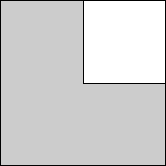 s = 2 Trivial. | 2. 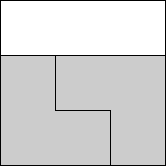 s = 3 Trivial. | 3. 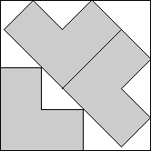 s = (3 + 3√2) / 2 = 3.621+ Found by Serhiy Grabarchuk in July 2005. |
| 5. 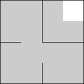 s = 4 Trivial. | 6. 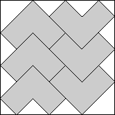 s = 7 / √2 = 4.949+ Found by Erich Friedman in June 2005. | 8. 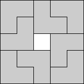 s = 5 Trivial. |
| 9. 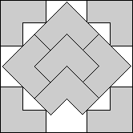 s = 3 + 2√2 = 5.828+ Found by Erich Friedman in June 2005. | 12. 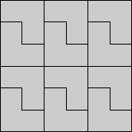 s = 6 Trivial. | 13. 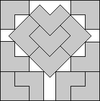 s = 4 + 2√2 = 6.828+ Found by Maurizio Morandi in June 2012. |
| 16. 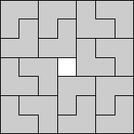 s = 7 Trivial. | 17. 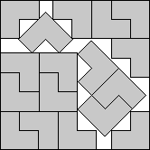 s = 19/3 + √2 = 7.747+ Found by Maurizio Morandi in June 2012. | 18. 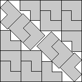 s = 13/2 + √2 = 7.914+ Found by Maurizio Morandi in June 2012. |
| 21. 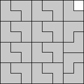 s = 8 Trivial. | 22. 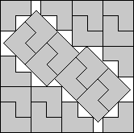 s = 3 + 4√2 = 8.656+ Found by Maurizio Morandi in June 2012. | 23. 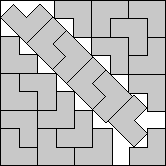 s = 15/2 + √2 = 8.914+ Found by Maurizio Morandi in June 2012. |